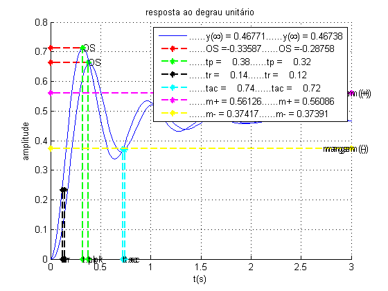
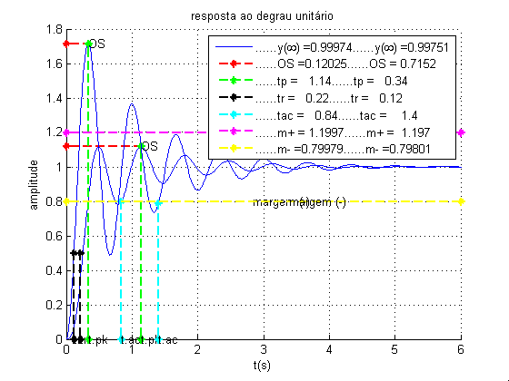

sobre
- Autor: Jonas Vieira de Souza
- Data: 11/09/2018
- Objetivo: Comparar respostas ao degrau
Contents
configurações iniciais
...
close all; clear; clc; s = tf('s');
g1(s) e g1aprox.(s)
...
figure
[ ~, ~, ~, ~, leg ] = step_detail( 700, ((s + 15) * (s^2 + 4*s + 100)), 0, 0.02, 3, 0.2, 1, 1, '' );
[ ~, ~, ~, ~, leg ] = step_detail( 700/15, (s^2 + 4*s + 100), 0, 0.02, 3, 0.2, 1, 1, leg );

g2(s) e g2aprox.(s)
...
figure
[ ~, ~, ~, ~, leg ] = step_detail( 360, ((s + 4) * (s^2 + 2*s +90)), 0, 0.02, 6, 0.2, 1, 1, '' );
[ ~, ~, ~, ~, leg ] = step_detail( 360/4, (s^2 + 2*s +90), 0, 0.02, 6, 0.2, 1, 1, leg );
